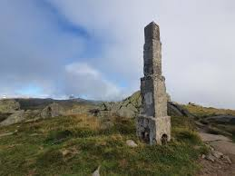
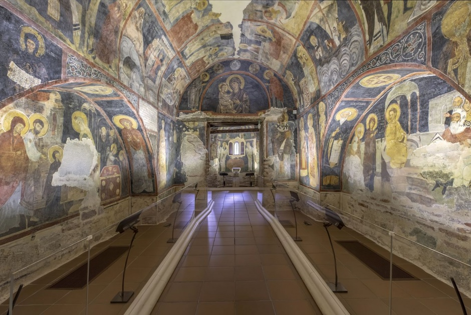
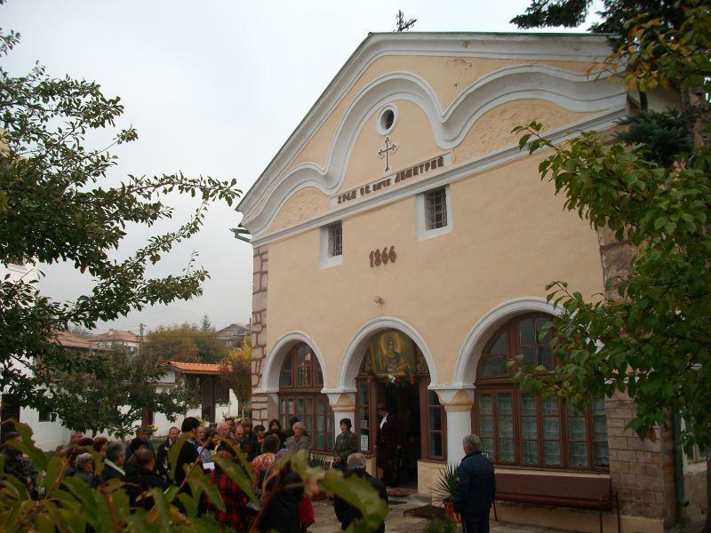
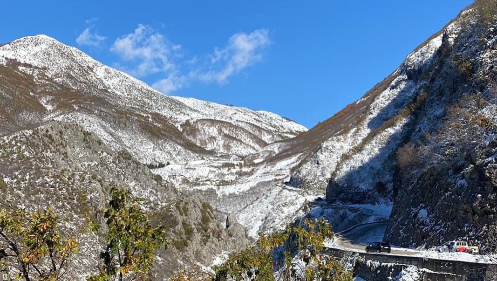
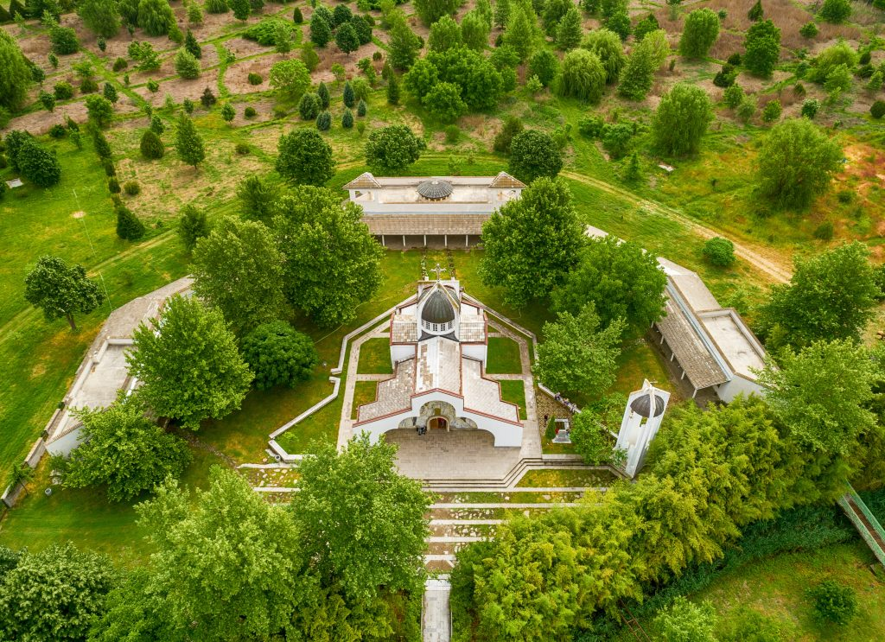
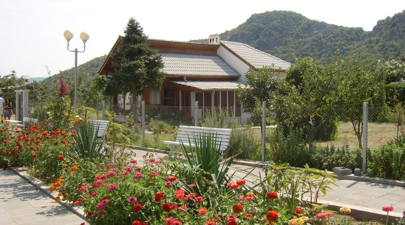
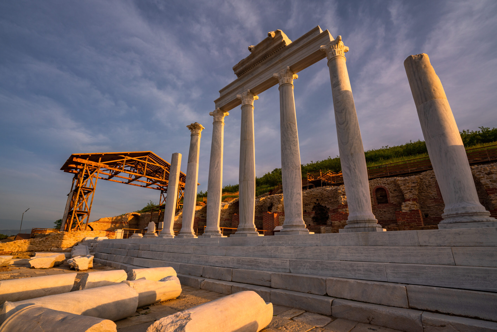
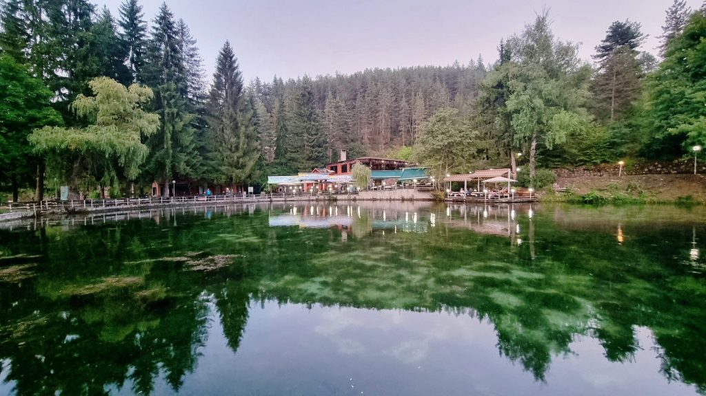

Забележителности
София
Витоша планина
Витоша е най-близката планина до София и една от най-популярните за туризъм. Тя предлага разнообразие от пешеходни маршрути, които са подходящи за всеки сезон. През зимата е дом на зимни курорти, като „Алеко“, които привличат любителите на ски и сноуборд. Летните месеци са идеални за разходки, пикници и наблюдение на дивата природа.

Черни връх
Черни връх е най-високата точка на Витоша, достигаща 2290 м надморска височина. От върха се открива панорамна гледка към Рила, Стара планина и Софийската котловина. Върхът е популярна дестинация за планинари и туристи.
Златни мостове
Златни мостове е природен феномен, представляващ каменна река от морени. Тази забележителност е предпочитана сред любителите на природата и фотографите, като маршрутите в района водят към други интересни точки, като Боянския водопад.

Боянски водопад
Боянският водопад е едно от най-красивите места в София. Разположен на Витоша, водопадът е с височина около 15 метра и може да бъде достигнат по пешеходна пътека от Бояна. Той е популярна дестинация през цялата година.

Боянска църква
Боянската църква е един от най-важните средновековни паметници в България, включен в списъка на ЮНЕСКО. Тя е известна със своите уникални стенописи и историческо значение.
Национален исторически музей
Националният исторически музей в София е най-големият музей в България. Той съхранява ценни археологически и исторически артефакти, които представят богатата история на страната.

Перник
Музей на минното дело
Музеят на минното дело в Перник е първият подземен музей на Балканите. Той представя историята на въгледобива в региона и предлага на посетителите уникално преживяване в автентична миньорска среда. Експозициите включват инструменти, оборудване и документи от индустриалната революция в България.

Пернишка крепост
Пернишката крепост, известна още като Кракра, е важен исторически обект, разположен на хълм в северната част на града. Въпреки че е частично разрушена, останките предоставят ценна информация за живота през Средновековието, а мястото предлага панорамна гледка към околностите.

Радомир
Исторически музей Радомир
Историческият музей в Радомир представя богатата история на региона чрез археологически находки, етнографски обекти и експонати от различни епохи. Провеждат се тематични изложби и образователни програми за посетителите

Църквата „Св. Димитър“
Важен религиозен и архитектурен паметник, построен през 19-ти век. Църквата впечатлява със своите възрожденски елементи и служи не само като място за поклонение, но и като културен център, където се провеждат концерти и празнични служби.
Голо бърдо
Голо бърдо е нископланински район, идеален за разходки и събиране на билки. Зелените хълмове и спокойната атмосфера привличат туристи, които търсят отдих в природата.
Сандански
Парк „Свети Врач“
Парк „Свети Врач“ е едно от най-живописните места в Сандански, предлагащ спокойствие, зелени алеи и минерални извори. Тук посетителите могат да се разходят, да се насладят на природата или да отпочинат край езерото.

Минерални извори Сандански
Сандански е известен със своите минерални извори, които са признати за лечебни, особено за дихателната система. Градът е сред водещите балнеологични курорти в България и привлича туристи, търсещи здраве и релаксация.
Базилика на епископ Йоан
Раннохристиянската базилика на епископ Йоан е един от най-значимите археологически обекти в региона. Тя впечатлява със своите мозайки и историческо значение, свидетелство за древното християнско присъствие на Балканите.

Петрич
Рупите
Рупите е уникална природна местност с лековити минерални извори и кратер на угаснал вулкан. Мястото е известно със спокойната си атмосфера и връзката си с пророчицата Ванга.

Домът на Ванга
Музей, посветен на живота и пророчествата на Ванга. В него са изложени лични вещи, снимки и документи, които разказват за нейната дарба и влиянието ѝ върху хората.
Храм „Св. Петка Българска“
Изграден с помощта на Ванга, този храм е религиозно и духовно средище, привличащо поклонници и туристи. Той впечатлява с архитектурата си и спокойствието, което предлага.

Хераклея Синтика
Античният град Хераклея Синтика е значима археологическа находка в близост до Рупите. Разкопките разкриват древни храмове, театър и други останки, свидетелстващи за историческото значение на региона.
Велинград
Минерални извори
Велинград е известен като „столицата на минералните извори“ на България. С над 80 минерални извора, градът привлича туристи, търсещи лечебни и релаксиращи процедури в местните спа и балнеологични комплекси.
Клептуза
Клептуза е най-големият карстов извор в България, създаващ живописно езеро. Районът е идеален за разходки, пикници и риболов, а природната красота на мястото привлича фотографи и любители на спокойствието.
Музей на историята на Велинград
Историческият музей разказва историята на региона чрез експонати от различни епохи. Той представя археологически находки, етнографски материали и културни традиции, запазени през вековете.

Снимки: